채널: 레디포그로스 (Ready For Growth) | 길이: 25:37 | 날짜: 2026-01-31
화자는 주변의 “회사가 뒤집혀도 담담한 사람”을 제시하며 강한 대비를 만듭니다. 한쪽은 위기에도 표정 변화가 적고 번아웃 없이 에너지를 유지하는 반면, 다른 한쪽(시청자)은 아직 일어나지 않은 일, 과거 실수, 피드백 하나에 과몰입해 밤새 시뮬레이션을 돌린다고 묘사합니다. 핵심 감정 문장(“만약 이렇게 되면?”, “저 사람이 나를 싫어하면?”)로 불안의 자동 사고를 즉시 호출합니다.
화면은 계단을 오르는 인물과 노란 원(성취/안정의 상징)을 배치해 “상향 이동 + 안정” 이미지를 줍니다.
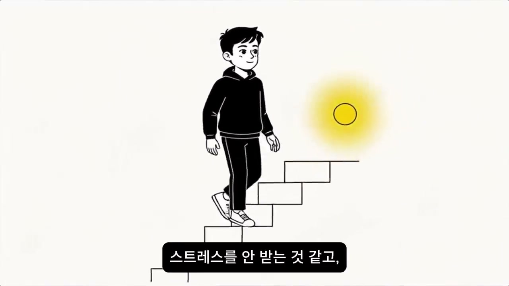
두 번째 구간에서 화자는 차이를 “성격”이 아니라 “뇌 구조 차이”로 선언하고, 동시에 “바꿀 수 있다”는 희망 프레임을 제시합니다. 제시 근거는 2025년 Nature Neuroscience 계열 최신 연구라는 형태로, 8주 훈련 시 감정조절 관련 연결성 최대 31% 강화를 언급합니다. 즉 영상의 전체 약속은 “흔들리지 않는 뇌로 재설계하는 구체적 방법”입니다.
화면은 인물 옆에 노란색 ‘31%’를 크게 배치해 숫자 기억을 강화합니다.
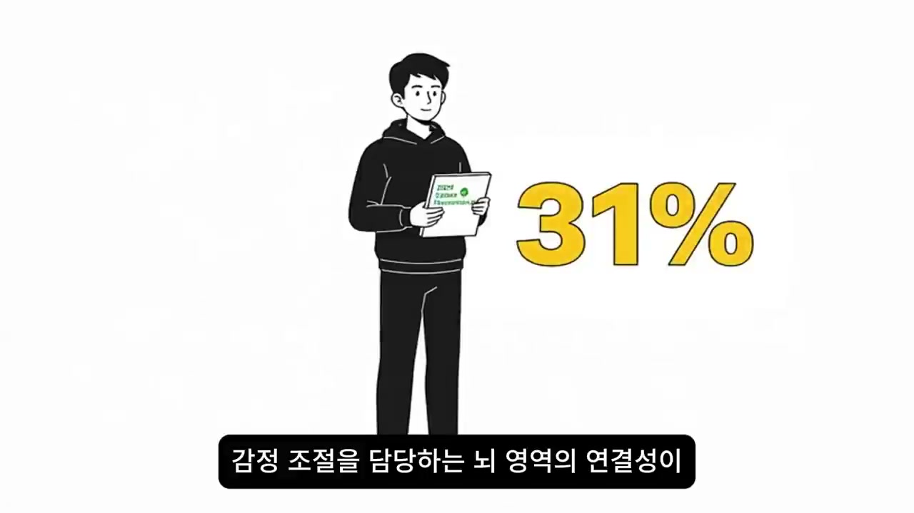
이 구간은 “수십 개 브라우저 탭을 띄운 컴퓨터” 비유로 뇌 과부하를 설명합니다. DMN(Default Mode Network)은 아무것도 안 할 때 오히려 활발하며, 과거 반추/미래 걱정/자기평가를 증폭시킨다고 설명합니다. 또한 우울/불안 집단에서 DMN 과잉활성 문제가 더 두드러진다는 논리를 제시합니다.
화면은 운전석·브레이크 메타포를 앞당겨 보여주며 이후 논의(감정 제동)의 시각적 복선을 깝니다.
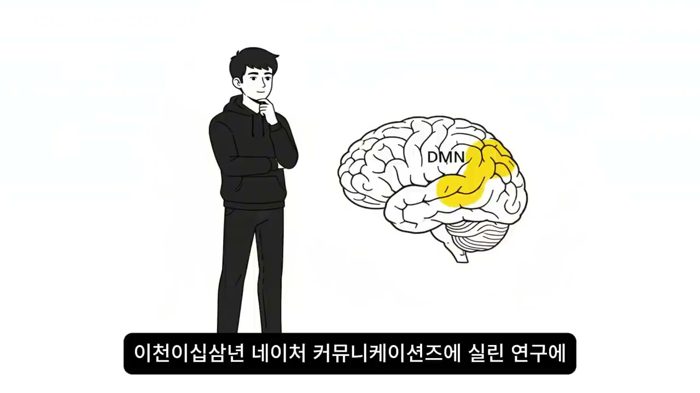
화자는 “생각이 많은 뇌는 쉬는 시간에도 쉬지 못한다”고 재강조합니다. 침대에서 3년 전 실수, 내일 회의, 방금 보낸 메시지를 연쇄적으로 떠올리는 장면은 반추의 전형적 체험을 직접 언어화합니다. 동시에 “여유로운 뇌”는 전전두엽이 편도체를 조절한다고 전환합니다.
시각적으로는 BUSY DMN(복잡한 검은 낙서) vs RESTED DMN(단순 곡선/노란 원) 이분법 도식이 매우 선명합니다. 상단에는 GROWTH CURATOR 말풍선이 보입니다.
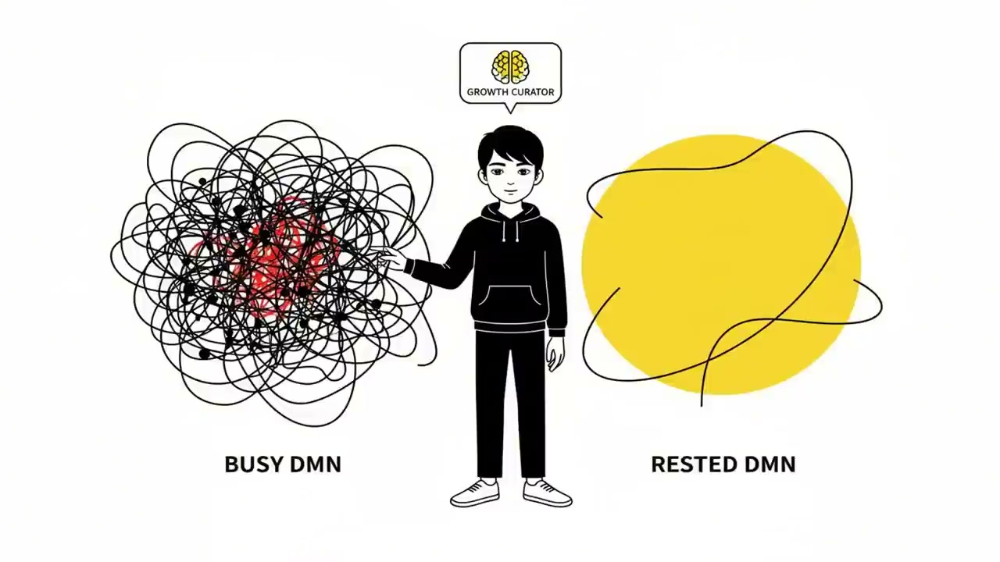
편도체를 “뇌의 경보 시스템”으로 정의하고, 현대사회 자극(상사 표정, 읽씹, SNS 비교)을 생존 위협이 아님에도 과대경보를 촉발하는 요소로 제시합니다. 이어 2024 하버드 의대 팀: 전전두엽→편도체 억제신호 43% 강화, 2025 MGH: HRV 높은 집단 회복속도 2배+를 제시해 제동 성능 차이를 수치화합니다.
화면은 DMN 하이라이트 뇌 이미지와 사고 중 인물을 배치해 “내부 회로 문제” 프레임을 유지합니다.
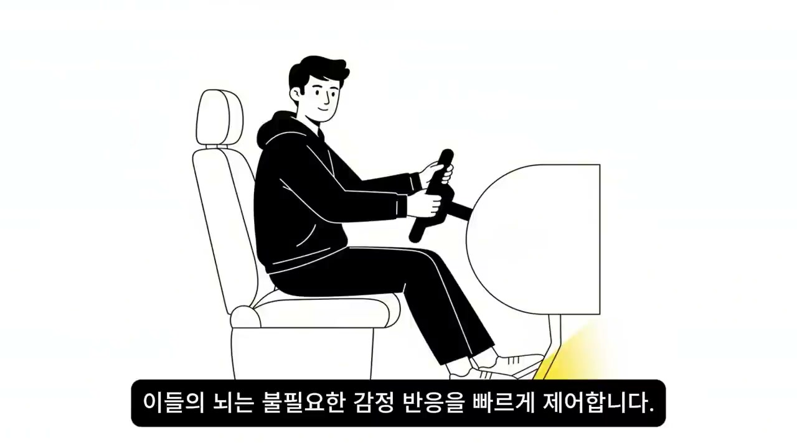
화자는 시청자 의문(참기, 억지 긍정, 운동/취미 해소를 했는데 왜 안 되나)을 받아 “기존 방식이 뇌과학적으로 비효율일 수 있다”고 주장합니다. 감정 억압은 편도체 자극을 키우고, 억지 긍정은 인지 부하를 늘린다는 논리입니다. 핵심 전환은 “감정을 누르는 것”에서 “감정 처리 방식 자체를 바꾸는 것”으로 이동합니다.
화면은 뇌를 확대 관찰하는 이미지를 사용해 ‘정밀 진단’ 느낌을 줍니다.
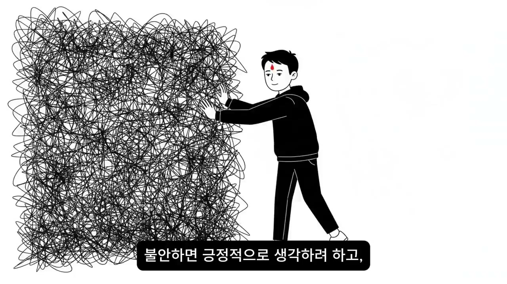
이 구간은 “진짜 여유로운 사람은 감정을 억누르지 않는다”는 선언 이후, 첫 전략 인지적 재평가를 소개합니다. 2023 옥스퍼드 감정신경과학 메타분석(48개 뇌영상 연구) 근거로, 재평가 시 전전두엽 활성 증가·편도체 활성 감소를 제시합니다. 메시지는 상황 변경이 아니라 해석 변경입니다.
화면의 거대한 낙서 벽(복잡 사고)과 이를 밀어내는 인물은 ‘머리로 누르는 방식의 한계’를 시각화합니다.
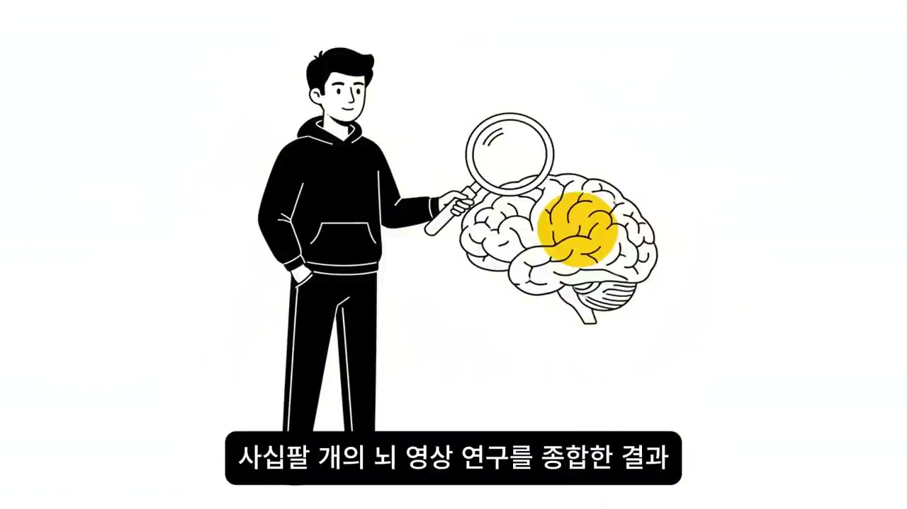
사례는 “상사가 보고서를 보고 표정이 안 좋다”입니다. 자동 경로는 편도체 경보→“망했다” 사고폭주→심박 상승·손땀으로 이어지고, 재평가 경로는 “보고서 때문일 수도/아닐 수도”의 다중 해석을 열어 둡니다. 화자는 이것이 단순 긍정이 아니라 해석 폭 확장이라고 선을 긋습니다.
화면은 물음표와 ‘3’을 든 인물로, 곧 제시될 3문항 훈련을 예고합니다.
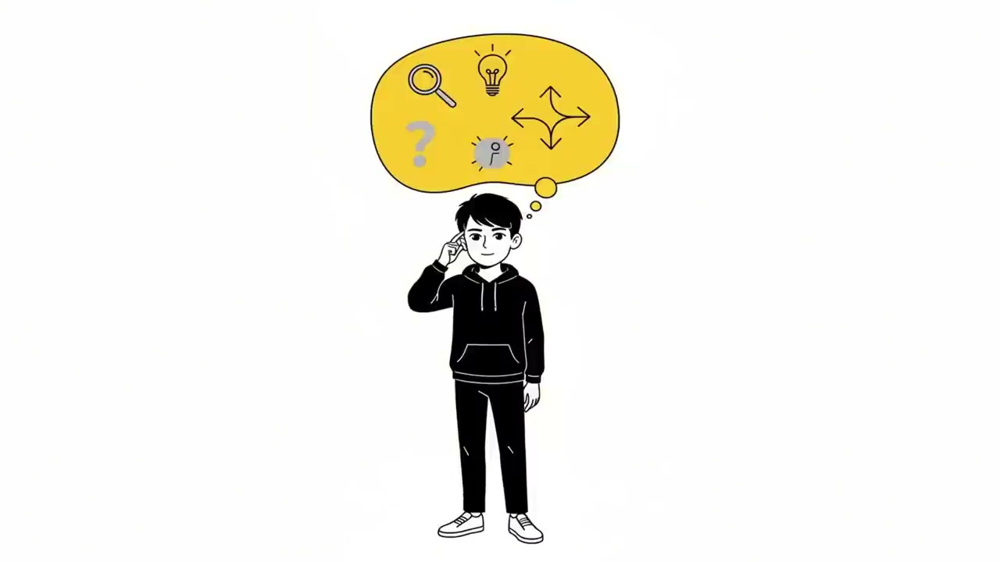
근거는 2024 스탠퍼드 심리학: 재평가 습관화 집단, 부정 사건 후 우울감 지속시간 평균 62% 감소입니다. 실행법으로 3문항을 제시합니다:
1) 내 해석이 유일한가
2) 1년 후에도 중요한가
3) 친한 친구가 같은 상황이면 뭐라고 말할까
이 질문만으로 전전두엽 개입이 촉진되어 편도체 과반응 억제가 가능하다는 구성입니다.
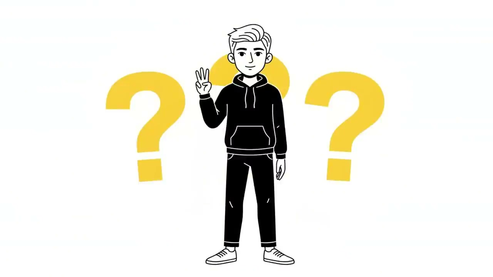
내수용감각을 심박·호흡·체온·배고픔 같은 내부 신호 인식 능력으로 정의합니다. 2024 Frontiers in Psychology 근거로, 내수용감각이 높을수록 감정조절이 좋고 불안·우울이 낮다고 제시합니다. 감정은 결국 “몸 신호를 뇌가 해석한 결과”라는 이론적 다리를 놓습니다.
화면은 사고 버블 안에 탐색/아이디어/방향전환 아이콘을 넣어 ‘내부 신호 해석’을 암시합니다.
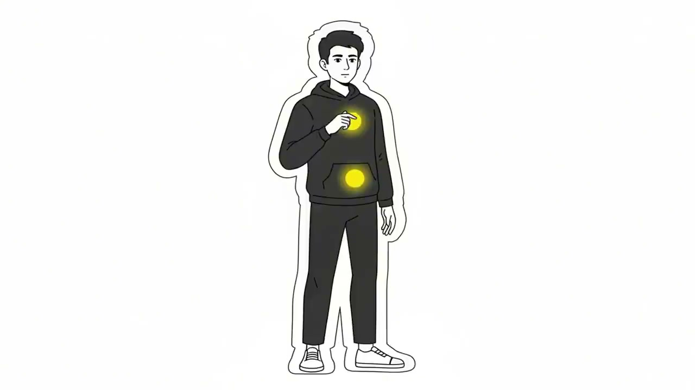
내수용감각이 낮으면 “막연한 불안, 갑작스러운 분노, 원인 모를 휘둘림”으로 가고, 높으면 “커피 때문인지/대화 불편 신호인지”를 구분해 한 발 떨어져 관찰할 수 있다고 설명합니다. 2025 UCSF 계열 연구로 8주 훈련 후 감정조절 35% 향상 + 코르티솔 유의 감소를 제시합니다.
화면 텍스트로 “35% increase Emotional Control Mastery”가 직접 노출됩니다.
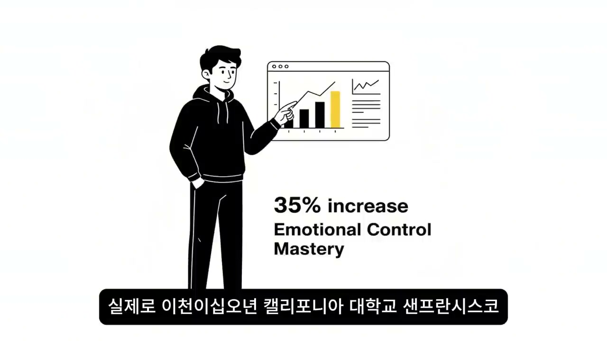
구체 훈련은 매일 5분 바디스캔입니다. 눈을 감고 발끝→머리끝으로 주의를 이동시키되 판단 없이 감각을 알아차립니다(발바닥 온기, 다리 무거움, 배 움직임, 가슴 두근거림). 처음엔 무감각할 수 있으나 2주 지속 시 민감도가 올라간다고 안내합니다.
화면은 툴박스/단계 진행 이미지로 “기술 습득형 훈련” 메시지를 강화합니다.
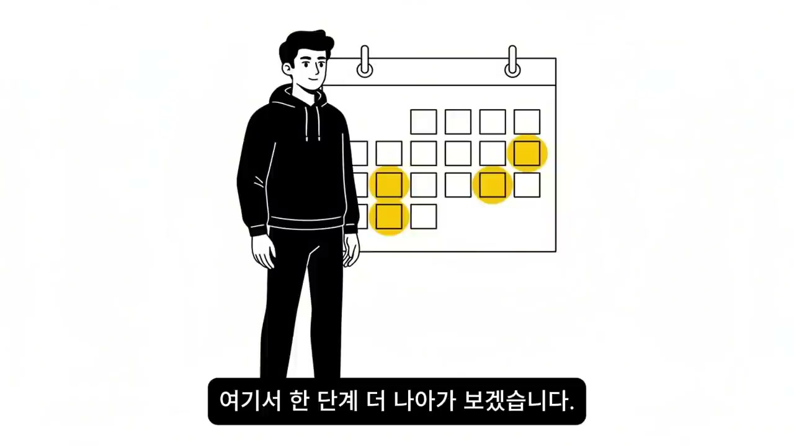
미주신경은 뇌-심장-폐-소화기관을 잇는 긴 뇌신경으로, 활성화되면 부교감계가 작동해 휴식 모드로 전환된다고 설명합니다. 2025 초 트라우마 테라피스트 인스티튜트 자료로 훈련군 감정조절 2배+ 향상을 제시합니다. 이어 4-7-8 호흡(4초 들숨, 7초 정지, 8초 날숨)을 가장 간단한 방법으로 제시합니다.
화면은 4, 7, 8 숫자를 크게 배치해 리듬 자체를 학습시키는 형태입니다.
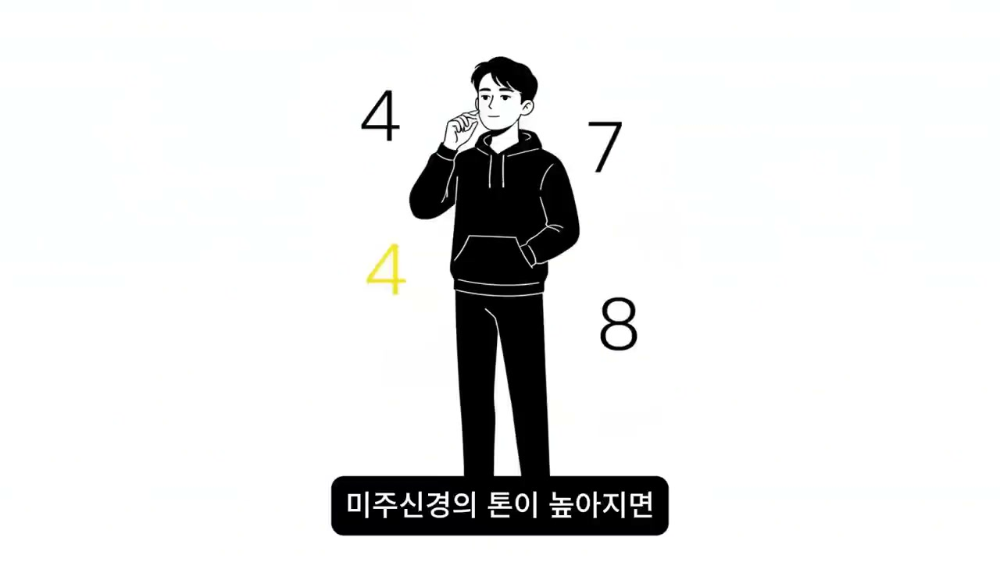
중요 포인트는 “날숨이 들숨보다 길어야 효과”입니다. 2024 Harvard Health 근거로 4주간 하루 5분 실천 시 불안장애 환자 편도체 과잉반응이 유의 감소했고, 효과가 호흡 순간을 넘어 일상에 지속됐다고 주장합니다. 이는 뇌가 새 기준점을 학습했기 때문이라는 해석입니다.
화면의 캘린더 하이라이트는 4주 누적 실천의 의미를 시각화합니다.
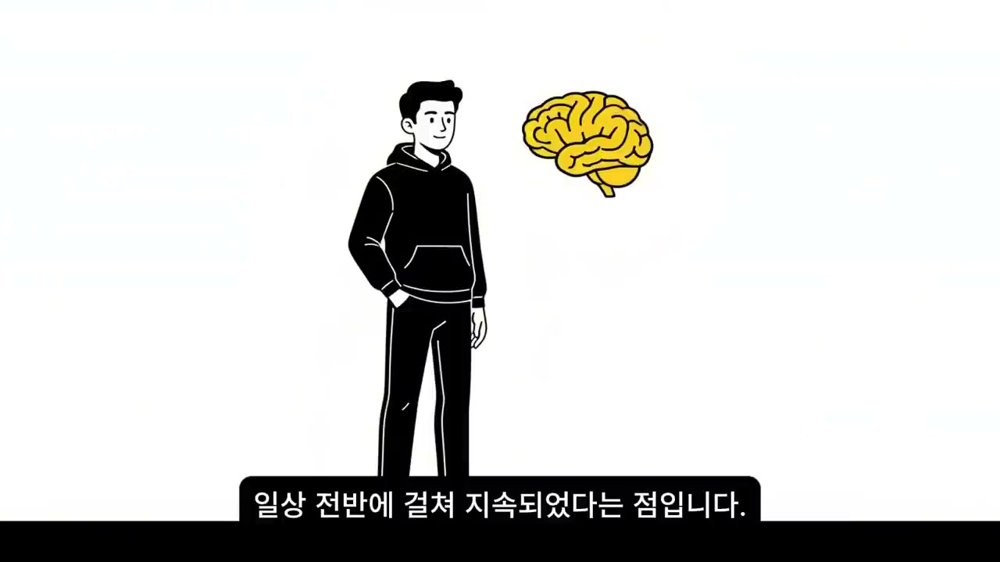
화자는 “원래 생각이 많은 사람에게도 먹히는가”라는 저항을 먼저 다룹니다. 결론은 오히려 이 집단이 가장 절실하고 효과도 크다는 것입니다. 이후 “분석 마비”를 핵심 문제로 명명하며 성향 맞춤 전략 파트로 들어갑니다.
화면은 상승 화살표와 발광 심장으로 “적용 시 개선 가능성”을 강조합니다.
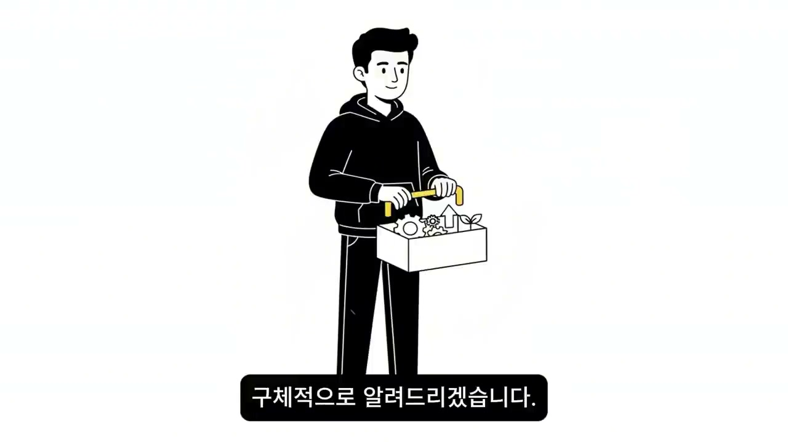
이 구간은 앞서 제시한 43% 억제신호, HRV, 2배 회복 근거를 압축 재진술합니다. 편도체-전전두엽-미주신경의 브레이크 프레임을 한 번 더 고정해, 뒤의 행동전략(2분 규칙 등)의 이론적 토대를 재확인합니다.
화면은 구름/해 대비 등 “해석 전환” 상징을 반복합니다.
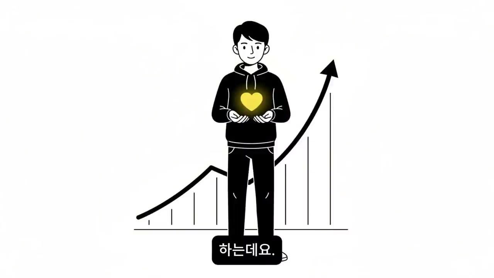
“우리가 왜 안 됐는가”를 다시 짚으며 감정 억압/억지 긍정의 한계를 재차 강조합니다. 메시지는 일관됩니다: 감정을 밀어누르지 말고, 다른 회로 경로로 처리하라. 반복 서술은 ‘인지 재프레이밍’을 정착시키기 위한 편집 전략입니다.
화면은 구름과 햇빛을 한 프레임에 넣어 “동일 현실의 이중 해석”을 상징합니다.
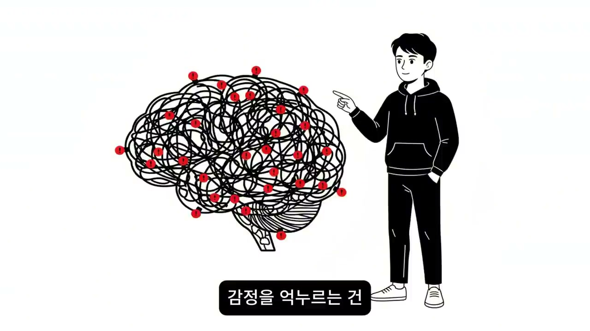
인지적 재평가 메타분석(48개 연구)과 상사 표정 사례의 자동경로를 다시 설명합니다. 이 반복은 시청자가 실제 상황에서 즉시 떠올릴 수 있도록 “사례 기억 고정” 효과를 노린 구성입니다.
화면은 00:00 디지털 타이머와 낙서 꼬리를 배치해 곧 이어질 “시간 제한 행동” 규칙으로 연결합니다.
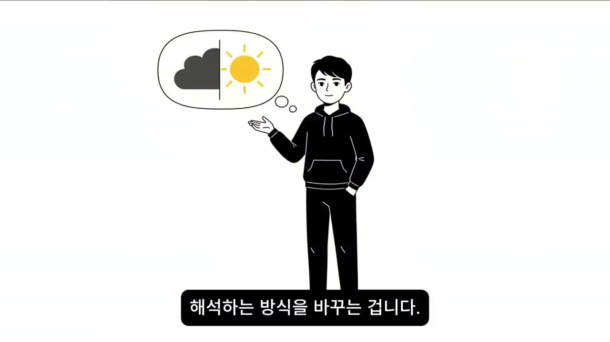
재평가 경로(다중 가능성 열기)를 설명한 뒤, 2023 Nature Communications 기반으로 반추 성향이 높은 사람에서 DMN 핵심영역-내측 측두계 연결 과강화가 있다는 설명으로 넘어갑니다. 즉 “생각의 고리가 끊어지지 않는 신경구조”라는 진단입니다.
화면은 뇌 내부를 연결선/붉은 포인트로 표시해 반복 루프를 시각화합니다.
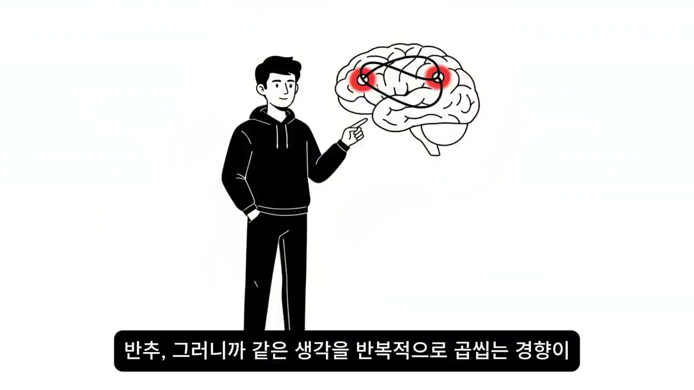
직관보다 사고를 중시하는 IN 계열, 특히 INTJ/INFJ 언급과 함께 완벽계획 집착-행동지연 패턴을 묘사합니다. 맞춤 전략 1은 2분 규칙: 생각 시작 시 타이머 2분, 결론 안 나면 행동. 2024 HBR의 80% 확신 vs 95% 확신 의사결정 결과 차이 비유의미 + 지연 시 기회비용 증가를 연결합니다.
화면은 빨간 느낌표로 가득 찬 낙서뇌를 제시해 ‘과사고 경보 상태’를 직관적으로 보여줍니다.
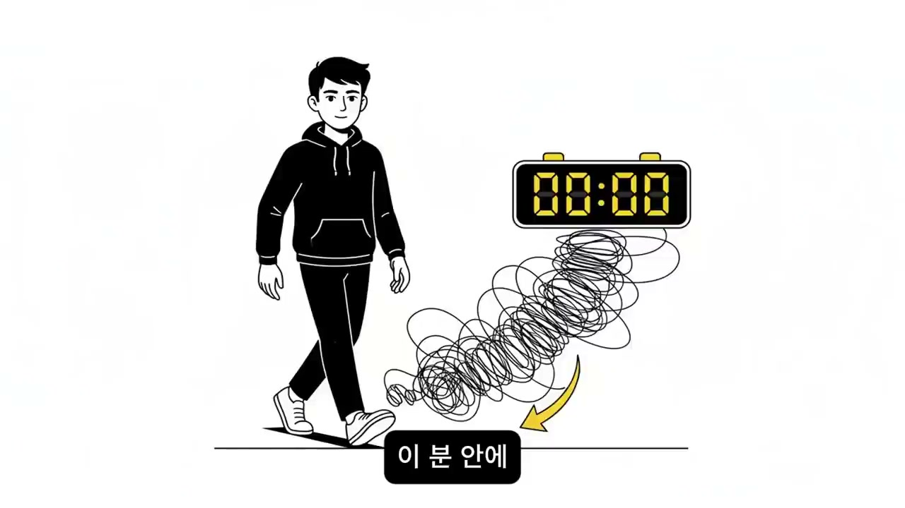
맞춤 전략 2는 “최악 상상 능력”을 역이용합니다. 최악에서 멈추지 말고 (1) 실제 발생확률을 숫자로 적기(대부분 10% 미만), (2) 실제 발생 시 대처안 3가지를 쓰기로 종결합니다. 2024 펜실베이니아 긍정심리센터 결과로 불안 53% 감소를 제시합니다.
화면의 보드 텍스트 “Probability < 10%”가 전략 핵심을 거의 한 줄로 요약합니다.
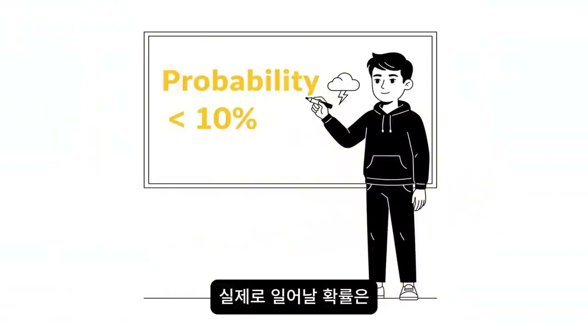
세그먼트 21의 연구 결과를 이어 받아 문제해결능력 28% 향상까지 제시합니다. 이어 맞춤 전략 3 “전환의식”으로 넘어가며, DMN 과활성이 특히 “일과 일 사이 전환 시점”에 튄다고 설명합니다. 퇴근 후에도 일 생각이 남는 상태를 전환 루틴 부재로 진단합니다.
화면은 집 소파에 앉아 있는데 머리 위에는 업무 도구와 서류가 떠 있어 ‘물리적 퇴근, 인지적 미퇴근’을 표현합니다.
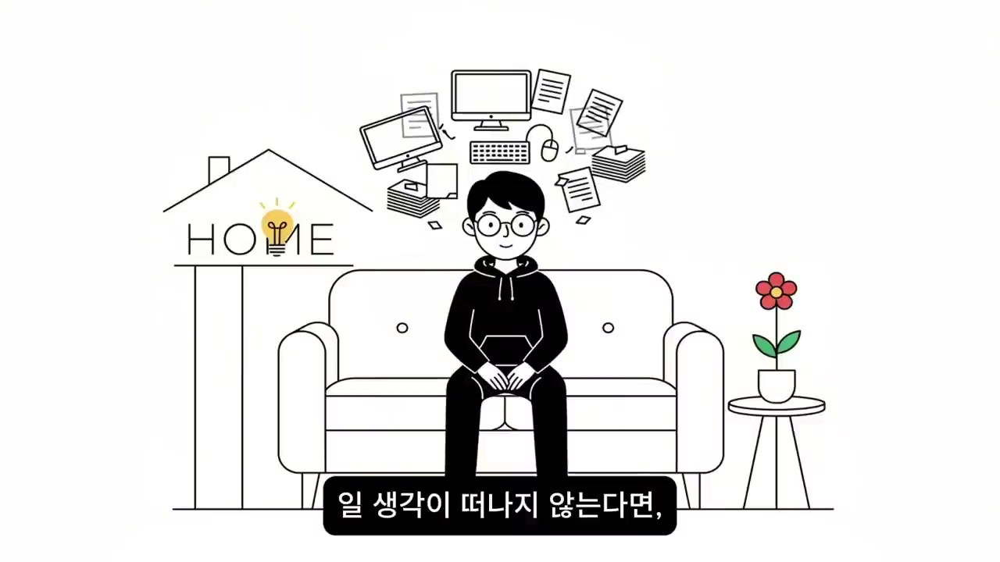
실행은 5분 루틴: 퇴근 시 오늘 잘한 것 3가지 회상 + 내일 가장 중요한 1가지 확정. 이는 뇌에 “업무모드 종료” 신호를 보내는 의식으로 제시됩니다. 2023 직장인 생산성 연구 근거로 퇴근 후 반추 45% 감소, 수면질 32% 향상을 제시한 뒤 맞춤 전략 4 감정 라벨링으로 이어집니다.
화면 상단에 “Step 4: Labeling” 문구와 꼬인 선에 라벨 태그를 붙이는 이미지가 나옵니다.
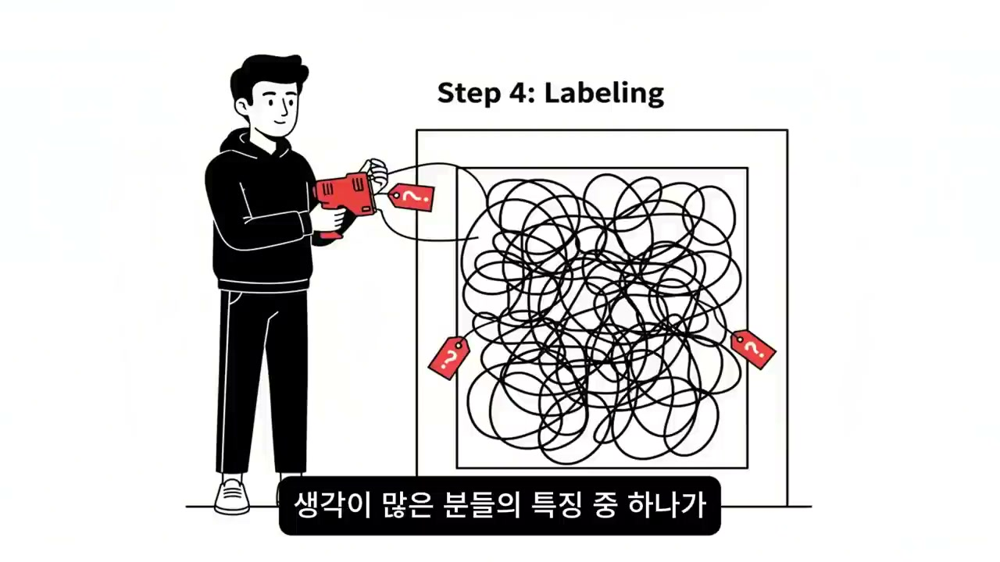
감정을 논리분석으로만 처리하려는 습관이 오히려 감정 지속을 늘린다고 주장합니다. 2022 UCLA 연구로 감정에 구체적 이름을 붙이면 편도체 활성 30%+ 감소를 제시하고, “기분 안 좋아” 대신 “실망감/두려움”처럼 정밀 명명을 권합니다. 이어 감정 어휘를 촘촘히 늘릴수록 자기상태를 정교하게 읽어 휘둘림이 줄어든다고 연결합니다.
화면은 다양한 활동 아이콘(양측성 자극 활동 암시)과 뇌 하이라이트를 함께 보여 다음 전략(몸 먼저 움직이기)로 이어집니다.
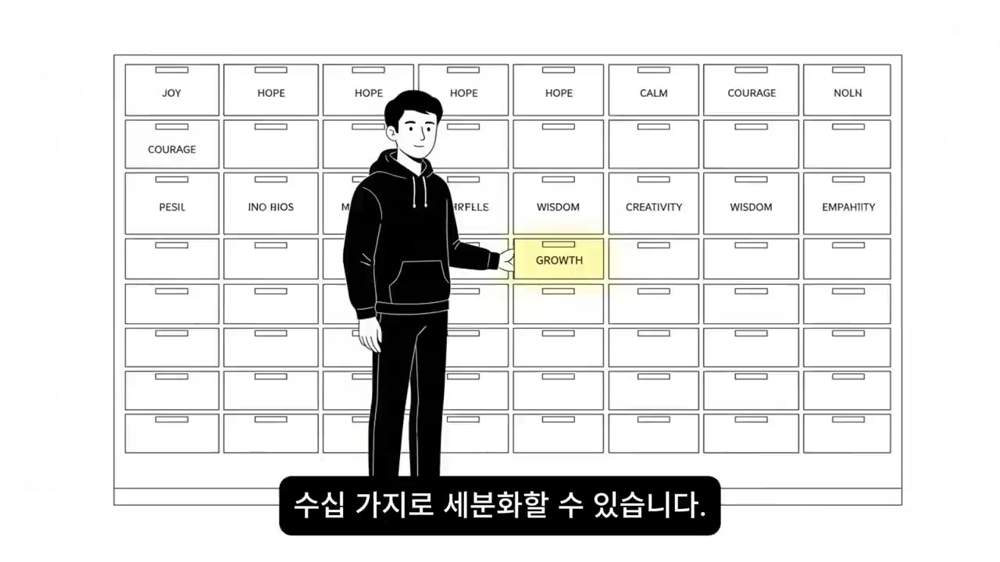
맞춤 전략 5는 “몸을 먼저 움직여라”입니다. 2025 스탠퍼드 연구로 5분 가벼운 걷기만으로 전전두엽 혈류 15% 증가, DMN 과활성 억제라는 수치를 제시합니다. 특히 걷기/수영/드럼 등 좌우를 번갈아 쓰는 양측성 자극 활동이 생각 고리 차단에 효과적이라고 정리합니다.
화면의 단어 보드(예: JOY, HOPE, CALM, COURAGE, WISDOM, CREATIVITY, EMPATHY, GROWTH)는 감정/가치 분화의 시각적 은유로 사용됩니다.
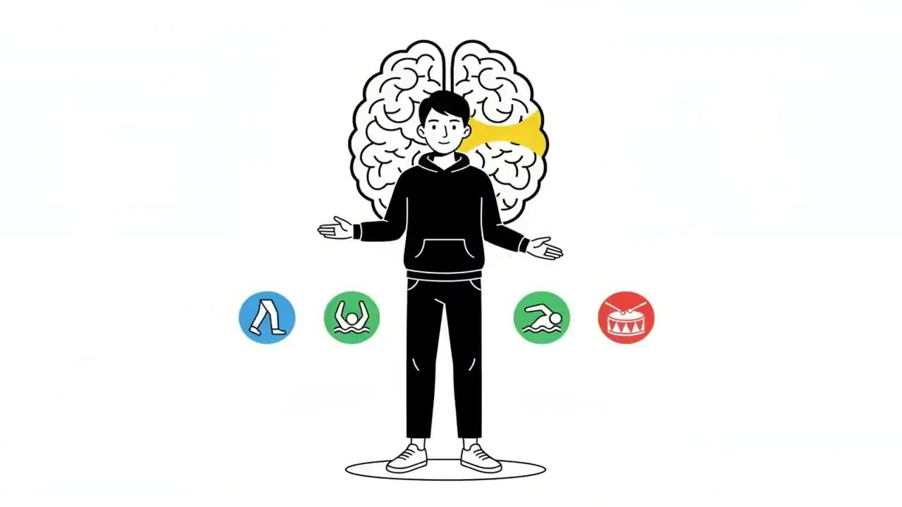
화자는 “무서울 정도로 여유로운 사람의 비밀은 기술이 아니라 관점”이라고 못박습니다. 2021 NIH 근거로 심리적 평정심(Equanimity)이 신경증 성향·지각 스트레스·우울증상을 완화하는 강력 조절변인이라 설명합니다. 핵심은 긍정 강요가 아니라 오르막/내리막 모두에 균형 태도를 유지하는 것입니다.
화면은 봉 위 균형잡기 자세로 ‘정서적 중심 유지’를 직관적으로 보여줍니다.
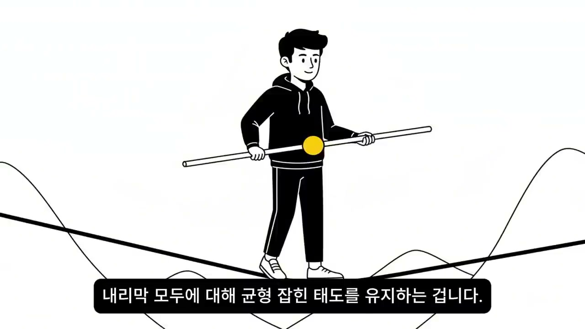
이어서 통제가능/통제불가능의 구분을 제시합니다. 타인의 평가, 과거 실수, 미래 불확실성은 통제 밖이므로 에너지를 덜 쓰고, 해석·반응·다음 행동에 집중하라는 메시지입니다. 또한 감정을 적으로 보지 않고 “불안이 왔네, 화가 나는구나”처럼 지나가는 날씨처럼 관찰하라며, 2024 Frontiers in Psychology의 이퀴너미티-마음챙김 핵심결과물 논지를 연결합니다.
화면은 창문 밖 비와 해가 동시에 있는 장면으로 감정 공존/관찰 태도를 시각화합니다.
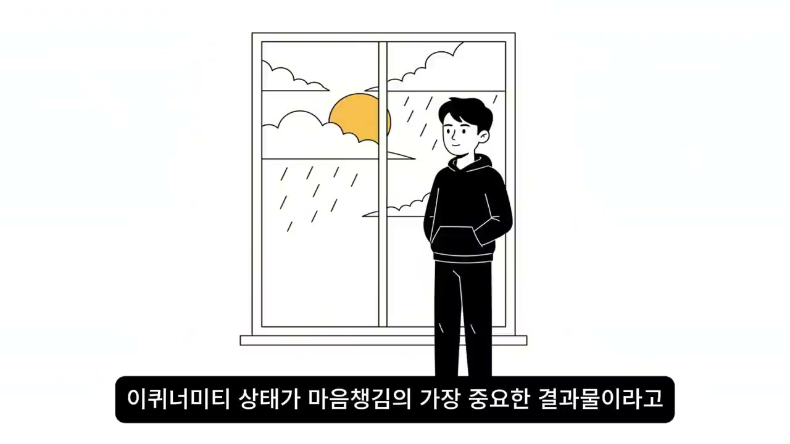
마지막 핵심 메시지는 “생각 많은 성향은 약점이 아니라 강점”입니다. 다만 그 강한 사고력이 자기공격으로 쓰이면 고통이 되고, 자기이해/전략적 대비/감정 활용으로 방향을 바꾸면 자산이 된다고 정리합니다. 8주, 하루 10분 실천 시 감정조절 회로가 물리적으로 바뀐다는 신경가소성 메시지로 행동 촉구를 마칩니다.
화면 텍스트는 BEFORE / AFTER / NEUROPLASTICITY로, 회로 변화 프레임을 매우 직접적으로 전달합니다.
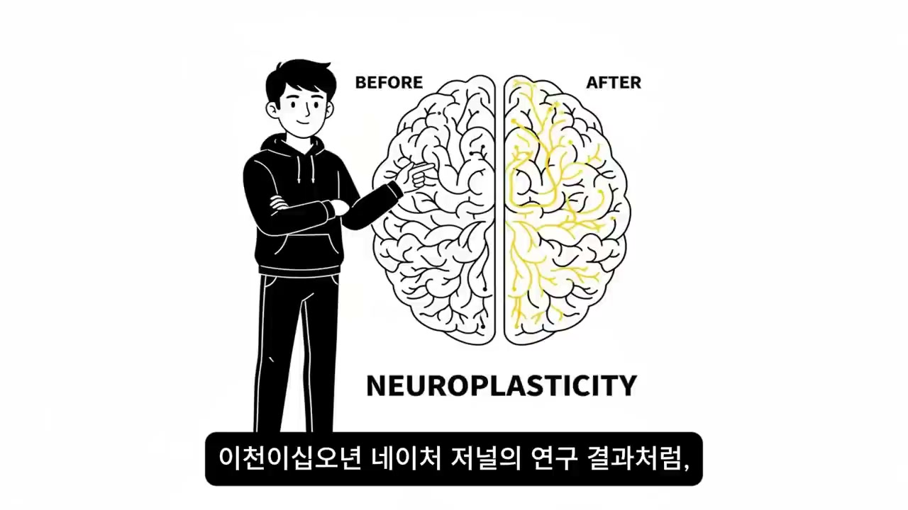
엔딩은 좋아요·구독·알림 설정 요청, 댓글 주제 수집, 다음 영상 반영 약속으로 구성됩니다. 채널 슬로건은 “데이터로 증명하고 심리로 해결하는 성장전략 연구소”이며, 시청자와의 공동 성장 내러티브를 강조합니다. 지식 전달형 콘텐츠를 커뮤니티 루프로 닫는 전형적 CTA 구조입니다.
화면 우측에 Ready for Growth 문구, 좌측에 작업 중인 인물이 배치되어 “실행하는 성장” 이미지를 고정합니다.
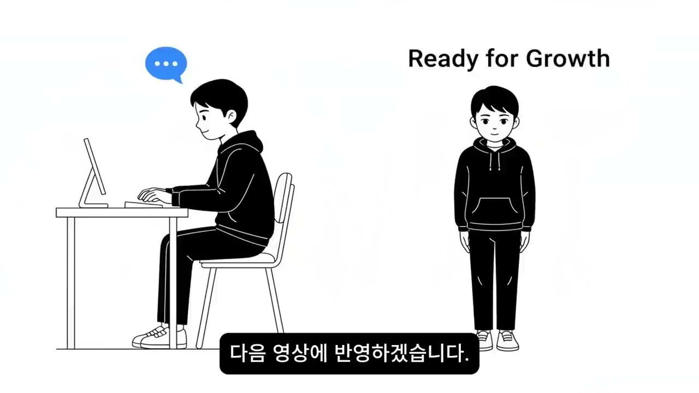
“이 차이가 단순한 성격이 아니라 뇌 구조의 차이라는 것을 과학적으로 증명해 드리겠습니다.”
“단 8주만의 훈련으로 감정조절을 담당하는 뇌 영역의 연결성이 최대 31%까지 강화된다.”
“생각이 많은 분들의 뇌는 쉬는 시간에도 쉬지 못합니다.”
“감정을 억누르는 건 오히려 편도체를 더 자극하고, 억지로 긍정적으로 생각하는 건 인지적 부담만 줍니다.”
“상황 자체를 바꾸는 게 아니라 그 상황을 해석하는 방식을 바꾸는 겁니다.”
“이 상황에 대한 내 해석이 유일한 해석인가? … 1년 후에도 중요할까? … 친구라면 뭐라고 말해줄까?”
“내수용 감각이 뛰어난 사람들은 감정 조절 능력이 유의미하게 높고, 불안과 우울 수준은 낮았습니다.”
“4초 들숨, 7초 멈춤, 8초 날숨… 특히 내쉬는 시간이 더 길어야 효과가 있습니다.”
“대부분의 최악 시나리오는 실제 확률이 10%도 안 됩니다.”
“여유로운 사람들의 진짜 비밀은 기술이 아니라 관점입니다… 통제할 수 있는 것에만 집중합니다.”
이 영상의 핵심은 “평온함은 타고난 성격이 아니라 훈련 가능한 신경회로 성능”이라는 명제입니다. 구조적으로는 DMN 과활성-편도체 과민-브레이크 약화라는 문제 정의를 제시하고, 재평가·내수용감각·미주신경·행동규칙·관점전환을 통해 제동 성능을 높이는 로드맵을 제공합니다.
실용적으로는 다음 3단계가 특히 강합니다. 첫째, 감정 폭주 순간에 3문항 재평가를 즉시 실행해 자동 경로를 끊는 것. 둘째, 매일 5분 바디스캔 + 4-7-8 호흡으로 생리적 브레이크를 키우는 것. 셋째, 2분 규칙·최악 시나리오 종결·퇴근 전환의식·감정 라벨링·10분 걷기로 “생각 루프를 행동 루프”로 바꾸는 것입니다.
전망 측면에서 이 콘텐츠는 CBT(재평가), 마음챙김(관찰/라벨링), 자율신경 조절(호흡/미주신경), 행동활성화(신체 개입)를 하나의 실행 프로토콜로 결합한 형태입니다. 영상의 최종 메시지는 명확합니다: 생각이 많은 능력을 버리는 게 아니라, 그 방향을 자기공격에서 자기조절로 전환하라.
댓글
GitHub 이슈 기반 댓글 시스템입니다.